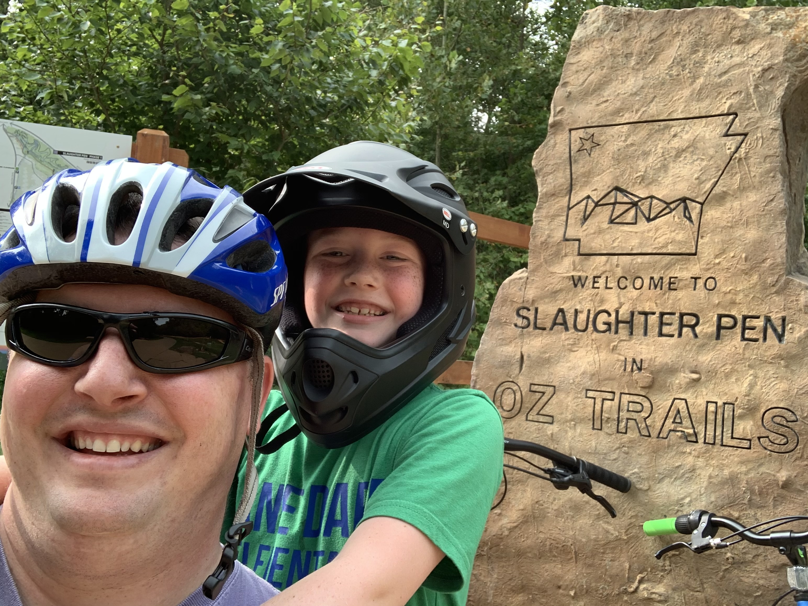

Fingerboarding for Beginners
About
 This is the Week 7 HTML project for the Front End Software Development Bootcamp. The project was inspired by a request from my son for a site about fingerboarding, and was created with the goal of showcasing my skills and knowledge in HTML.
This is the Week 7 HTML project for the Front End Software Development Bootcamp. The project was inspired by a request from my son for a site about fingerboarding, and was created with the goal of showcasing my skills and knowledge in HTML.
My name is Michael Varnell and I am excited to present this project, which showcases my ability to create websites and web pages using HTML only. This project is a testament to my dedication and hard work as a student in the Bootcamp, and I am proud to share it with you.